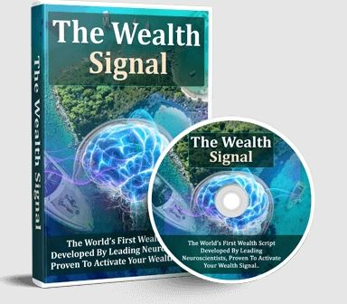

Are you interested in personal development, positive thinking, and building a healthier relationship with money? The Wealth Signal is a digital program marketed around a wealth-focused mindset.
In this review, we explore what The Wealth Signal is, its advertised approach, potential benefits, and important things to consider before buying.

The Wealth Signal
Explore the official product information and see whether this program matches your interests.
Visit Official Website →What Is The Wealth Signal?
The Wealth Signal is promoted as a digital personal-development program focused on wealth mindset and positive thinking. Its marketing presents a wealth-related script and a digital listening experience.
It is important to understand that this is not a stock-trading platform, an investment service, or a guaranteed income system.
How Does The Wealth Signal Work?
The program is marketed around a simple mindset-focused approach. It encourages users to explore positive thinking and make personal reflection part of their routine.
- A wealth-focused script.
- An audio-based listening experience.
- A routine centered around repetition.
- A focus on personal mindset and goals.
Potential Benefits
People interested in personal development may enjoy exploring routines that encourage reflection and positive thinking.
- Encouraging positive thinking.
- Making time for daily reflection.
- Building consistency in personal routines.
- Thinking more carefully about financial goals.
These are possible personal-development benefits. They should not be understood as guaranteed results from this particular product.
Is The Wealth Signal Worth Considering?
That depends on your expectations. If you are interested in mindset-focused audio programs, you may find its approach worth exploring.
However, if you expect guaranteed income, instant wealth, or a proven investment strategy, this product should not be viewed as a solution.
Things to Consider Before Buying
- Read the complete product description.
- Check the current price at checkout.
- Review the delivery information.
- Read the refund policy and its conditions.
- Be cautious of claims promising guaranteed wealth.
Final Thoughts
The Wealth Signal is an interesting digital product for people curious about mindset-focused routines and personal development.
It may appeal to those who enjoy audio programs and positive-thinking exercises. However, its wealth-attraction claims should be approached with realistic expectations.
Explore The Wealth Signal
Interested in learning more? Visit the official product page to review the current offer and details.
Check Official Offer →Affiliate Disclosure: This article contains an affiliate link. If you purchase through this link, we may earn a commission at no additional cost to you.
Disclaimer: This article is for informational purposes only. Individual experiences may vary, and financial results are not guaranteed.